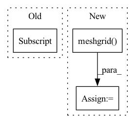

Pattern ID :17872
Before Change
self.to_logits = nn.Linear(latent_dim, num_classes)
def forward(self, data, mask = None):
b = data.shape[0]
data = fourier_encode(data, self.num_fourier_features)
data = rearrange(data, "b n ... -> b n (...)")
x = self.latents + self.pos_embAfter Change
// calculate fourier encoded positions in the range of [-1, 1], for all axis
axis_pos = list(map(lambda size: torch.linspace(-1., 1., steps = size, device = device), axis))
pos = torch.stack(torch.meshgrid( *axis_pos) , dim = -1)
enc_pos = fourier_encode(pos, self.num_fourier_features)
enc_pos = rearrange(enc_pos, "... n d -> ... (n d)")
enc_pos = repeat(enc_pos, "... -> b ...", b = b)
// concat to channels of data and flatten axis
In pattern: SUPERPATTERN
Frequency: 4
Non-data size: 3
Instances Fragment ID: 58586573
Project Name: lucidrains/perceiver-pytorch
Commit Name: 37e2eb6650fb9f609f9aee39df5ed830f5550325
Time: 2021-03-11
Author: lucidrains@gmail.com
File Name: perceiver_pytorch/perceiver_pytorch.py
M Class Name: Perceiver
N Class Name: Perceiver
M Method Name: forward(3)
N Method Name: forward(3)
M Parent Class: nn.Module
N Parent Class: nn.Module
M File Name: perceiver_pytorch/perceiver_pytorch.py
N File Name: perceiver_pytorch/perceiver_pytorch.py
M Start Line: 158
M End Line: 160
N Start Line: 160
N End Line: 174
Before Change
def get_gaussian_kernel2d(kernel_size, sigma: float, normalize: bool = True):
kernel1d = get_gaussian_kernel1d(kernel_size, sigma, normalize)
return torch.mm(kernel1d[:, None], kernel1d[None, :] )
After Change
xs = torch.linspace(-ksize_half, ksize_half, steps=kernel_size)
ys = torch.linspace(-ksize_half, ksize_half, steps=kernel_size)
x, y = torch.meshgrid( xs, ys, indexing="xy")
pdf = torch.exp(-0.5 * ((x * x + y * y) / (sigma * sigma)))
return pdf / pdf.sum() if normalize else pdf Fragment ID: 58586569
Project Name: ffiirree/cv-models
Commit Name: b12094ddf56c50ca8e40834f1a03d076a93c5950
Time: 2022-11-22
Author: ice_qi@163.com
File Name: cvm/models/ops/functional.py
M Class Name: AnonimousClass
N Class Name: AnonimousClass
M Method Name: get_gaussian_kernel2d(3)
N Method Name: get_gaussian_kernel2d(3)
M Parent Class:
N Parent Class:
M File Name: cvm/models/ops/functional.py
N File Name: cvm/models/ops/functional.py
M Start Line: 42
M End Line: 43
N Start Line: 44
N End Line: 53
Before Change
image = np.random.rand(640, 480, 3)
mask = np.random.rand(640, 480)
joints = np.random.randint(0, 480, size=(1, 17, 3))
joints[..., 2] = 2 // all visible
aug = KeypointsRandomAffineTransform(min_scale=0.8, max_scale=1.2, max_rotation=30, max_translate=0.5, prob=1, image_pad_value=0, mask_pad_value=0)
aug_image, aug_mask, aug_joints, _, _ = aug(image, mask, joints, None, None)After Change
// without relying on randomly generated keypoints.
x = np.arange(image.shape[1])
y = np.arange(image.shape[0])
xv, yv = np.meshgrid( x, y, indexing="xy")
joints = np.stack([xv.flatten(), yv.flatten(), np.ones_like(yv.flatten())], axis=-1) // [N, 3]
joints = joints.reshape((-1, 1, 3)).repeat(17, axis=1) // [N, 17, 3]
Fragment ID: 58586571
Project Name: deci-ai/super-gradients
Commit Name: cdc2f989667388ddf52be7c611b82eb7f44a7c74
Time: 2023-03-16
Author: ekhvedchenya@gmail.com
File Name: tests/unit_tests/transforms_test.py
M Class Name: TestTransforms
N Class Name: TestTransforms
M Method Name: test_keypoints_random_affine(1)
N Method Name: test_keypoints_random_affine(1)
M Parent Class: unittest.TestCase
N Parent Class: unittest.TestCase
M File Name: tests/unit_tests/transforms_test.py
N File Name: tests/unit_tests/transforms_test.py
M Start Line: 19
M End Line: 30
N Start Line: 17
N End Line: 40
Before Change
"""
grid_list = tf.meshgrid(np.arange(0, x), np.arange(0, y))
return tf.cast(tf.stack([grid_list[0], grid_list[1] ], -1), tf.float32)
def concate(x:List[tf.Tensor],axis=1):After Change
grid_list = tf.meshgrid(np.arange(0, x), np.arange(0, y))
if normalized_coordinates==True:
grid_list = tf.meshgrid( np.linspace(0, 1, int(x)),np.linspace(0, 1, int(y)))
return transpose(tf.cast(tf.stack(grid_list, -1), tf.float32),[1,0,2])
Fragment ID: 58586577
Project Name: allanyiin/trident
Commit Name: c4e9851c4c718f74ab3a6ab77899162d020d7ee5
Time: 2020-05-09
Author: allan@asiaminer.com.tw
File Name: trident/backend/tensorflow_ops.py
M Class Name: AnonimousClass
N Class Name: AnonimousClass
M Method Name: meshgrid(4)
N Method Name: meshgrid(4)
M Parent Class:
N Parent Class:
M File Name: trident/backend/tensorflow_ops.py
N File Name: trident/backend/tensorflow_ops.py
M Start Line: 641
M End Line: 643
N Start Line: 1195
N End Line: 1199